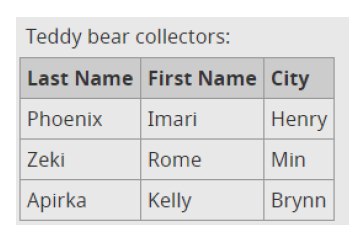

| Anterior | Inicio | Siguiente |
En la siguiente tabla los datos (nombre, apellido y ciudad) no se pueden distinguir unos de otros sin saber a qué encabezado corresponde cada uno. El atributo scope con el valor col define la dirección de las celdas de encabezado y las asocia con las celdas de datos correspondientes. El atributo scope también es necesario para tablas más grandes con una fila o columna de encabezado. Indica:
A continuación se realizará la tabla de la siguiente imagen
| Last Name | First Name | City |
|---|---|---|
| Phoenix | Imari | Henry |
| Zeki | Rome | Min |
| Apirka | Kelly | Brynn |